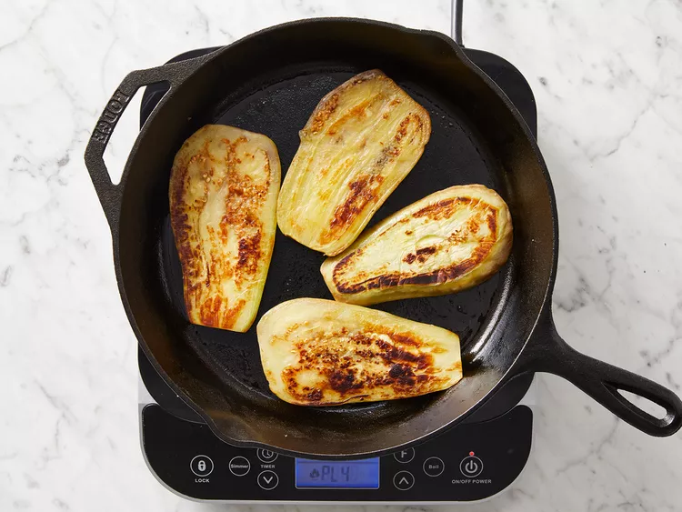
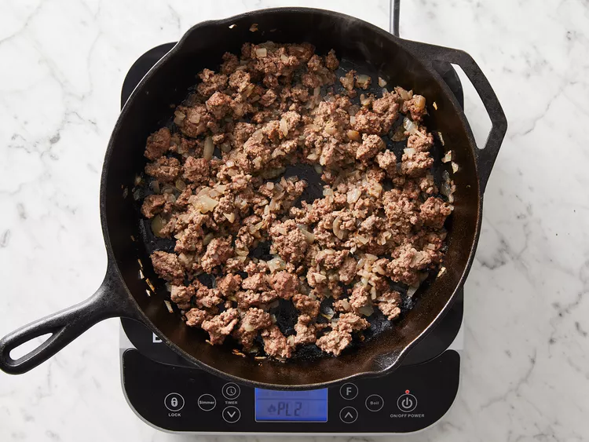
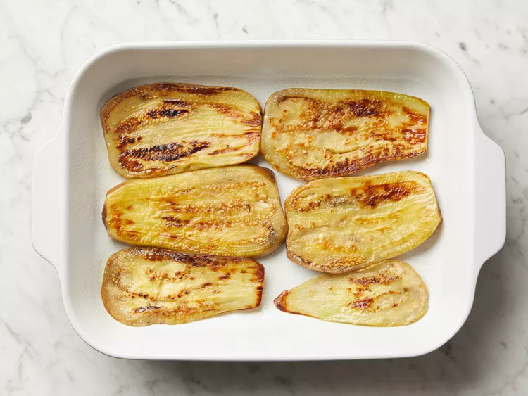
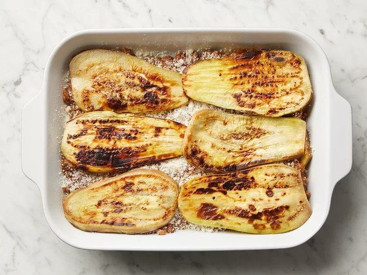
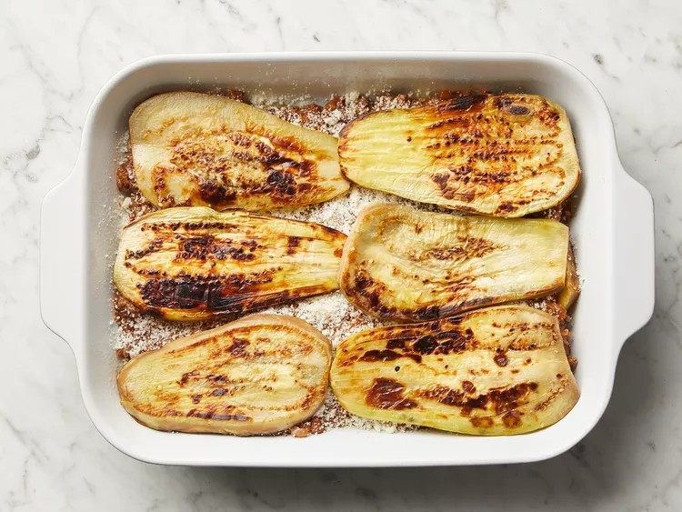
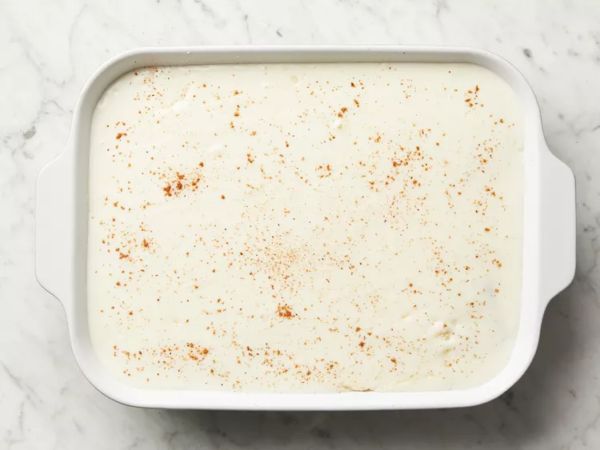

Lay eggplant slices on paper towels; sprinkle lightly with salt. Let sit for 30 minutes to draw out moisture, then pat dry with paper towels.

Warm olive oil in a skillet over high heat. Fry eggplant until browned, 2 to 3 minutes per side. Drain on paper towels; set aside.
Melt 1 tablespoon butter in a large skillet over medium heat. Stir in ground beef, onions, and garlic; season with salt and black pepper. Cook and stir until beef is browned, 8 to 10 minutes.
Add parsley, fines herbs, cinnamon, and 1/4 teaspoon nutmeg. Pour in tomato sauce and wine; mix well. Simmer for 20 minutes. Allow to cool, then stir in beaten egg.

Scald milk in a saucepan over medium heat.
At the same time, melt 1/2 cup butter in a large skillet over medium heat.

Whisk flour into butter until smooth. Lower heat; gradually pour in scalded milk, whisking constantly until it thickens. Season béchamel sauce with salt and white pepper.

Preheat the oven to 350 degrees F (175 degrees C). Grease a 9x13-inch baking dish.
Arrange a single layer of eggplant in the prepared baking dish.
Cover eggplant with meat sauce, then sprinkle 1/2 cup Parmesan cheese on top. Cover with remaining eggplant and sprinkle another 1/2 cup cheese on top.
 
Pour béchamel sauce on top and sprinkle with remaining 1/4 teaspoon nutmeg. Cover with remaining cheese.
Bake in the preheated oven until bubbly and browned, about 1 hour.

Serve hot and enjoy!